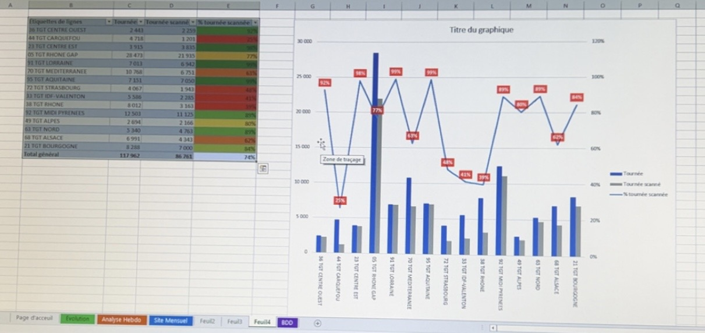

En tant qu'ingénieur méthode outils transport, j'ai mis en place un système de suivi des KPI liés à la traçabilité de la température durant le transport alimentaire. Ce projet a permis d'assurer une meilleure conformité réglementaire et d'optimiser la sécurité des produits transportés.
J'ai également réalisé une présentation aux responsables transports concernant le recensement des téléphones et des équipes. Cette initiative a permis d'améliorer la gestion des équipements et d'assurer une communication fluide entre les différentes équipes logistiques.